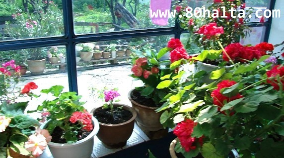

ئالدىنقى يازما
ئالدىنقى يازما كېيىنكى يازما
كېيىنكى يازما
چاققاق ئوتتىن باشلانغان پاراڭلار (غۇلجا ساياھەت خاتىرىسىدىن پارچە)
ئاپتور:Birzat ۋاقتى:2011-08-24


ھاۋا تۇتۇق، ئاسماننى ھېلىلا يامغۇر ياغىدىغاندەك قويۇق بۇلۇتلار قاپلاپ كەتكەن. ناراتقا بارىدىغان ساياھەت پىلانىمىزنى كىچىكتۈرگىم كەلمەي ھاۋا ئىچىلىپ قالار دېگەن ئۈمۈد بىلەن تولا ئاسمانغا قارايمەن. يار مۇھەممەد ئاكاممۇ ھىلى ئۆيىنىڭ ئۈستۈنكى قەۋىتىگە چىقىپ نارات تەرەپنىڭ ئاسمىنىغا قاراپ بۇلۇتلارنىڭ ئەلپازىنى كۆزەتسە ھېلى نارات تەۋەسىدە دەپ تەخمىن قىلغان نۇمۇرلارغا تېلفۇن قىلىپ ناراتتا يامغۇر يېغىۋاتقان ياكى ياغمايۋاتقانلىقىنى سۈرۈشتە قىلىۋاتاتتى. بىر نۇمۇر نەق نارات ساياھەت نۇقتىسىدىكى بىرسىگە ئۇلىنىپ ھاۋا ئەتتىگەنكىدىن ئىچىلىپ كەتكەنلىكىنى، يامغۇرنىڭ ئاساسەن توختىغانلىقى ئېيتىپ خاتىرجەم كىلىپ ئويناپ كەتسەك تامامەن بولىدىغانلىقىنى قوشۇپ قويدى. شۇنىڭ بىلەن ئايال-بالىلارنى جابدۇتۇپ ناراتقا قاراپ يۈرۈپ كەتتۇق. غۇلجا شەھىرىدىن چىقىپ غۇلجا ناھىيسى، جىليۈزى، قاش دەرياسى، ئابرال تېغى دېگەن جايلارنى بىسىپ ئۆتۈپ ناراتقا يېقىنلاپ قالغاندا توختاپ بالىلارنى تەرەت قىلدۇرۇپ ماڭماقچى بولۇپ ماشىنىدىن چۈشتۇق. يارمۇھەممەد ئاكامنىڭ قىززىق پاراڭلىرى، ماشىنا ھەيدەشتىكى ماھارىتى بىلەن 250 نەچچە كىلومىتىر مۇساپىنى بىردەمدىلا بىسىپ بولغاندەك تۇيۇلۇپ كەتتى. تەرەت قىلماق بولۇپ يولنىڭ نېرىسىدىكى ئېتىزلىق تەرەپكە ئۆتۈپ كىتىۋاتسام يارمۇھەممەد ئاكام چاقىردى، قارىسام - چاققاقتىن ئىھتىيات قىلىڭ! چاققاق بارمۇ-يوق قاراپراق ئولتۇراسىز، ھە ئۇكام! دەپ تەكرار ئېيتتى.  چاققاق دېسە ئادەمنى چاقىدىغان بىرەر ھاشارەت بار بولغىيمىدى بۇ غۇلجىدا دەپ ئوت-چۆپلەر ئارىسىدىكى چىكەتكە، كۆكۈيۈن دېگەندەك ھاشارەتلەرگە دېققەت قىلىپ يۈرۈپتىمەن. كىيىن بىلسەم چاققاق بىر خىل ئۆسۈملۈك بولۇپ ئادەمنىڭ بىر يېرىگە تېگىپلا كەتسە ھۈررەك ئۆرلەپ ۋېژىلداپ ئىچىشىپ خىلى بىر ئۇزۇنغىچە بىئارام قىلىدىكەن. چاققاق قارىماققا كەندىرگە ئوخشاپراق كېتىدىغان بولۇپ يوپۇرماقلىرى كەندىردىن سەل چوڭراق ئىكەن. دەسلاپتا چاققاقلارنى كۆرۈپ كەندىرگە ئوخشىتىپ غۇلجىنىڭ ناھىيلىرىدە كەندىر ھەجەپ كۆپ ئىكەن دەپتىمەن. يېقىنراق كىلىپ پۇراپ باقسام كەندىر ئەمەس . لىكىن ئەشۇ چاققاق ئوتلار ئارىسىدا ئىنچىكە يوپۇرماقلىرى بىلەن چاققاق ئوتتىن ئازىراق پەرقلىنىپ تۇرىدىغان، بولاق ئۆسكەن كەندىرلەرنى كۆرمەك تەس ئەمەس ئىكەن. چاققاق ئوت ھەققىدە ناراتقا بارغاندىن كىيىن قىززىق پاراڭلارنى ئاڭلىدۇق. نارات بازىرى ئىچىدە ياش ۋاقتىدا يېڭىساردىن بىرىپ ئولتۇراقلىشىپ قالغان ھېكىمكامنىڭ چوڭ قورۇلۇق ئۆيىگە چۈشۈپ ئوخشىتىپ ئېتىلگەن ئەتكەن چېيىنى ئىچىپ ئولتۇرۇپ پاراڭغا چۈشۈپ كەتتۇق. مەن چاقچاق قىلىپ - ھېكىمكا بۇ ناراتتا كەندىرنى كەڭرى تېرىيدىكەنسىلە ھە، بىر كىم بىر نېمە دېمەيدىكەن دېسەم، قەشقەرلىكلىكىڭنى قىلمىغىنا ئۇكام، بۇ دېگەن يايلاق تۇرسا، ئۆزى ئۈنۈپ قالغان نەرسىگىمۇ بىر كىم بىر نېمە دەيدىغان ئىش بولامدۇ؟ سەن كۆرگەن ئېتىز قىرلىرىدىكى، يايلاقلاردىكى ئۇ كۆكتاتلار پىشىپ بولغۇچە مال-ئۇلاغلىرىمىز يەپ تۈگۈتىپ بولىدۇ، دېدى.
چاققاق دېسە ئادەمنى چاقىدىغان بىرەر ھاشارەت بار بولغىيمىدى بۇ غۇلجىدا دەپ ئوت-چۆپلەر ئارىسىدىكى چىكەتكە، كۆكۈيۈن دېگەندەك ھاشارەتلەرگە دېققەت قىلىپ يۈرۈپتىمەن. كىيىن بىلسەم چاققاق بىر خىل ئۆسۈملۈك بولۇپ ئادەمنىڭ بىر يېرىگە تېگىپلا كەتسە ھۈررەك ئۆرلەپ ۋېژىلداپ ئىچىشىپ خىلى بىر ئۇزۇنغىچە بىئارام قىلىدىكەن. چاققاق قارىماققا كەندىرگە ئوخشاپراق كېتىدىغان بولۇپ يوپۇرماقلىرى كەندىردىن سەل چوڭراق ئىكەن. دەسلاپتا چاققاقلارنى كۆرۈپ كەندىرگە ئوخشىتىپ غۇلجىنىڭ ناھىيلىرىدە كەندىر ھەجەپ كۆپ ئىكەن دەپتىمەن. يېقىنراق كىلىپ پۇراپ باقسام كەندىر ئەمەس . لىكىن ئەشۇ چاققاق ئوتلار ئارىسىدا ئىنچىكە يوپۇرماقلىرى بىلەن چاققاق ئوتتىن ئازىراق پەرقلىنىپ تۇرىدىغان، بولاق ئۆسكەن كەندىرلەرنى كۆرمەك تەس ئەمەس ئىكەن. چاققاق ئوت ھەققىدە ناراتقا بارغاندىن كىيىن قىززىق پاراڭلارنى ئاڭلىدۇق. نارات بازىرى ئىچىدە ياش ۋاقتىدا يېڭىساردىن بىرىپ ئولتۇراقلىشىپ قالغان ھېكىمكامنىڭ چوڭ قورۇلۇق ئۆيىگە چۈشۈپ ئوخشىتىپ ئېتىلگەن ئەتكەن چېيىنى ئىچىپ ئولتۇرۇپ پاراڭغا چۈشۈپ كەتتۇق. مەن چاقچاق قىلىپ - ھېكىمكا بۇ ناراتتا كەندىرنى كەڭرى تېرىيدىكەنسىلە ھە، بىر كىم بىر نېمە دېمەيدىكەن دېسەم، قەشقەرلىكلىكىڭنى قىلمىغىنا ئۇكام، بۇ دېگەن يايلاق تۇرسا، ئۆزى ئۈنۈپ قالغان نەرسىگىمۇ بىر كىم بىر نېمە دەيدىغان ئىش بولامدۇ؟ سەن كۆرگەن ئېتىز قىرلىرىدىكى، يايلاقلاردىكى ئۇ كۆكتاتلار پىشىپ بولغۇچە مال-ئۇلاغلىرىمىز يەپ تۈگۈتىپ بولىدۇ، دېدى.
گەپ چاققاق ئوتنىڭ پارىڭىغا ئۆتۈپ بىرسىنىڭ ئايالى خاپا قىلغاندا قولىغا پەلەي كىيىپ تازا يوغۇنىغان بىر تۈپ چاققاق ئوتنى يۇلۇپ ئەكىرىپ يىرىم يالىڭاچ خوتۇنىنى ساۋىغانلىقىنى، ئۇ مەزلۇمنىڭ بەدەنلىرى ئىششىپ ھەپتىگىچە ۋايجانلاپ ئۆيدىن چىقالماي ياتقانلىقىنى، ساياھەت نۇقتىلىرىدىكى ئاشخانىلاردا ئىچكىردىن چىققان ساياھەتچىلەرگە بىر تەخسە چاققاق ئوت قورۇمىسىنى 80 سومدىن ساتىدىغانلىقى، ئۇلارنىڭ بۇ خىل قورۇمىنى ئارزۇلاپ يەيدىغانلىقى دېگەندەك پاراڭلارنى دېيشىپ سىرتقا چىقىپ قايتقاندا ئالغاچ كىتىدىغانغا يارمۇھەممەد ئاكام قولىغا سۇلياۋ پەلەي كىيىپ تۇرۇپ 2-3 چىپتا كەلگۈدەك چاققاق ئوت ئورۇپ تاشلاپ قويدى. چاققاق ئوت ئوچۇق بەدەنگىلا ئەمەس، نىپىزرەك كىيىم بولسىمۇ بەدەننى چىقىپ ئىچىشتۇردىكەن. ھېچقانداق تىكىنى بولمىغان بۇ خىل ئۆسۈملۈكنىڭ ئۇ قەدەر <<كارامىتى>> بارلىقىغا ھەيران بولۇپ يۇمران يوپۇرماقلىرىنى ئاستا تۇتۇپ بىقىپتىمەن. بىردەمدە قولۇمنى پاشا چاققاندەك ئىچىشتۇرۇپ ھۈررەك ئۆرلەپ چىقتى. ۋاي ئاللاھ، ما ئىشنى ... ھىلىقى ئېرىنى خاپا قىلغان مەزلۇم قانچە قىينالغان بولغىيتتى دەپ كەتتىم.
ئۇنىڭغىچە ھېكىمكامنىڭ ئوغلى يەرلىكلەر << ماڭقا ئوت >> دەپ ئاتايدىغان يەنە بىر خىل - غولىدىن ئۈزسە ئىچىدىن قويۇق شىلىمشىق سۇيۇقلۇق ئاجرىتىپ چىقىرىدىغان ئۆسۈملۈكنى كۆرسىتىپ، شۇنىڭ << ماڭقىسى>> نى ئىلىپ چاققاق ئوت چېقىۋالغان يەرگە سۈرسە بىردەمدىلا ساقىيىپ قالىدۇ، دېدى. دېگەندەك چاققاق ئوتنىڭ ئەتراپىدىلا ئۆسىدىغان بۇ خىل ئۆسۈملۈكتىن ئۈزۈپ << ماڭقىسى>> نى چىقىرىپ قولۇمغا سۈرسەم بىردەمدىلا قىزىرىپ، ئىچىشىۋاتقان يەر ئوڭشىلىپ قالدى. شۇنچە زەھەرلىك چاققاقنىڭ يېنىغا ئۇنىڭ زەھىرىنى ئالىدىغان يەنە بىر ئۆسۈملۈكنى يارىتىپ ئىنسانلارغا رەھىم قىلغان ئاللاھقا ھەمدى ئېيتتىم.
يارمۇھەممەد ئاكامنىڭ ئېيتىشىچە ھەر قانداق زەھەر، يامان نەرسىنىڭمۇ بىر ياخشى يېرى بولغاندەك چاققاق ئوتنىڭ جېگەر خىزمىتىنى ياخشىلاش، قان ساپلاشتۇرۇپ، قاندىكى ماي دېگەندەك قان ئەخلەتلىرىنى تازىلايدىغانلىقىنى ، چوڭ-كىچىك تەرەتنى راۋان قىلىش خۇسۇسىيەتلىرى بارلىقى، بۇنىڭدا تاماق قىلىپ يېسىمۇ، چۆپىنى قۇرۇتۇپ يانجىپ چاي ئورنىدا دەملەپ ئىچىپ بەرسىمۇ بولىدىغانلىقى سۆزلەپ بەردى.
ئۈرۈمچى كەچلىك گىزىتتە چاققاق ئوتنىڭ رېماتىزىملىق بوغۇم ياللۇغىغا بولغان شىپاسى ھەققىدە بىر رېتسىپ بار ئىكەن: چاققاق ئوت (كەندىر يوپۇرماقلىق) تىن تۆت مىسقال ئىلىپ تازىلاپ ، ئۇششاق توغراپ سۇدا قاينىتىپ يەرلىك ئورۇننى كۈندە ئۈچ قېتىم يۇيۇپ بەرسە رېماتىزىملىق بوغۇم ياللۇغىنى ئۈنۈملۈك داۋالىغىلى بولىدۇ.
داۋامى بار.....
تېمىنىڭ داۋامى ھېكىمكامنىڭ ھويلىسىغا تېرىلغان ھەر خىل گۈللەر ۋە باشقا دورىلىق ئۆسۈملۈكلەر ھەققىدە بولىدۇ.
مانا نارات: (سۈرەتلەرنى ئۆزۈم تارتقان)
غۇلجا ئاياللىرىنىڭ پاكىزلىقى، تىرىشچانلىقىنى ھويلا-ئاراملىرىغا تېرىغان گۈللىرىدىن ئاسانلا بايقىغىلى بولاتتى. ناراتتەك بىر تاغ سەھراسىدا ھېكىمكامنىڭ قورۇسىغا كىرىپ ئۆزى ئاددىي لىكىن چەتئەللىكلەرنىڭ داچىسىدەك ئىسىل كۆرىنىدىغان ھويلا-ئارامنى كۆرۈپ ھەيران قالدىم. ھويلا -ئارام، ئۆي ئىچىلىرى شۇنچە پاكىز، رەتلىك سەرەنجانلاشتۇرۇلغان ئىدى. كىلىنچەكنىڭ گۈل خۇمارى شۇنچە ئىكەنلكى ئۆستۈرگەن گۈللىرىگە قاراپ ئايالىم بىلەن ئانام كىلىنچەككە <<ھەسەت>> قىلىشىپ ئىچىلىرىگە تارتىپ كېتىشتى. غۇلجىدىن چىققان ئايال تۇققانلارمۇ ئۇ گۈللەرگە ھەۋەس بىلەن قارىشىپ تاماشا قىلىشتى.
ھېكىمكامنىڭ ھويلىسىدىكى ھاجەتخانىغا بارىدىغان <<چېغىر يول>>:

ھېكىمكامنىڭ كىلىنچىكى ئۆستۈرگەن گۈل ئىكەن. ھەممىمىزنى ھەيران قالدۇردى، خانىم - چوكانلار بۇ گۈلنىڭ بۇنداق ئاينىغىننى كۆرۈپ باقمىغان ئىكەن. ئىسمىنى داخېيتاڭ دەپ ئۇيغۇرچىسىنى سورىسام دەپ بىرىپتى، ئۇنتۇپ قاپتىمەن. بىلىدىغان تورداشلار ئىلتىپات قىلغان بولساڭلار:
ئىزاھلىق لۇغەتتە يۇقۇرقىدەك دەپتۇ. بېگۇنىيە دېگىنى نېمە بولۇپ كەتتى ئەمدى...
大叶海棠【大叶海棠（秋海棠科）】: ئۇيغۇرسوفت خەنزۇچە-ئۇيغۇرچە چوڭ لۇغىتى
dà yè hǎi táng؛
چوڭ يوپۇرماقلىق بېگۇنىيە؛
ئاشۇ ھويلىدا ئۆستۈرۈلگەن ئەتىرگۈل:

ماۋۇ رەسىمنى سىن كۆرۈنىشىدىن تۇتقان ئىدىم، تازا سۈزۈك چىقماپتۇ:

بۇ ھويلىدىكى مېۋىلىك دەرەخلەر ئىكەن:
داۋامى بار..........
ھېكىمكامنىڭ ئۆيىدە ئەتكەن چاينى تويغۇدەك ئىچىپ قورساقنى توقلاپ يايلاققا يۈرۈپ كەتتۇق. ھويلىدا تۇرۇپ قارىسا يېشىل مەخمەل يېپىپ قويغاندەك يېقىندىلا كۆرىنىدىغان نارات تاغلىرى 15-20 كىلومىتىر يول باسقاندا بارغىلى بولىدىكەن. كۆرۈنۈپ تۇرغىنى نارات ساياھەت نۇقتىسى بولۇپ ماشىنا بىلەن تاغ ئۈستىگىچە چىققىلى بولىدىغان يول بارمىش، لىكىن ئۇ تەرەپكە ئۆتۈش ئۈچۈن ھەر بىر كىشى 80 كويدىن پۇل خەجلەشكە توغرا كىلىدىكەن. بىز ئىككى ماشىنىلىق ئۇششاق-چوڭ بولۇپ 14-15 ئادەم ئىكەنمىز. 80كويدىن خەجلىسەك بىرە مىڭ كويدىن ئىشىپ كەتكۈدەك. شۇڭا تېخىمۇ گۈزەل يەر ئىزدەپ تاغ ياقىسىدىكى يولنى بويلاپ ئىچكىرسىگە كىرىپ كەتتۇق.
يۇقۇردىكى رەسىم 80 كويلۇق بىلەت بىلەن كىرگىلى بولىدىغان يەر ئىكەن. بۇ يەرنى يىراقتىن تاماشا قىلغاچ تاغ بويلاپ ئېقىۋاتقان دەريانىڭ يۇقۇرىسىغا قاراپ يۈرۈپ كەتتۇق.

ئالاھىزەل 8-10 كىلومىتىر ماڭغاندىن كىيىن تۆۋەندىكى كۆۋرۈكتىن ئۆتۈپ ئارام ئالماقچى بولدۇق:
ئەتراپنىڭ ئۆزگىچە گۈزەل مەنزىرىسىنى تاماشا قىلغاچ تاۋۇز-قوغۇن يەپ بىردەم ئارام ئالدۇق. ئاياللار ئەتراپنى ئايلىنىپ بىرە باغلامدىن تاغ يالپۇزى يېغىپتۇ. مەن ئاجايىپ ساپ، پاكىز تاغ ھاۋاسىدىن راھەتلىنىپ چوڭ-چوڭ نەپەس ئىلىپ ئۇياق-بۇياقنى سۈرەتكە ئىلىپ ئايلىنىپ يۈردۈم. بۇنداق ئۆزگىچە گۈزەل مەنزىرە، سالقىن، ساپ ھاۋانى جەنۇپتا ئۇچراتمىقىمىز ئاسان ئەمەس.
يارمۇھەممەد ئاكاممۇ قىززىق ئادەم. ئارىدا بىرەر سائەتتەك يوقاپ كېتىۋاتقان. بىر چاغدا قولىدا بىر دەستە - ھەر خىل گۈل-چېچەكلىرىدىن تېزىپ ئارىمىزدا پەيدا بولدى. يەڭگىمىزنىڭ ئالدىغا بىرىپ، خوتۇن ياش ۋاقتىمىزدا گۈدەكلىك، ياشلىق قىلىپ مۇش-پەشۋا بىرىپتىكەنمەن. شۇنچە ئېغىرىمنى كۆتۈرۈپ مۇشۇ ۋاقىتقىچە مەندىن يامانلىماي كەلدىڭ، ئەمدى بولسىمۇ ئەقلىمنى تېپىپ بۇ بىر دەستە گۈلنى شۇنچە گۈللەر ئارىسىدىن تاللاپ ئۈزۈپ ساڭا ئەكەلدىم، قوبۇل قىلغىن، دېۋىدى. يەڭگىمىز شۇنداق خۇش بولۇپ كەتتىكى تاس قالىتتى يىغلىۋەتكىلى. گۈلنى قولىغا ئىلىپ رەھمەت دېگەچ باشقا ئاياللارغا مەغرۇر قاراپ قويدى. بەزى ياش چوكانلار بۇنى كۆرۈپ ئەرلىرىگە غۇدۇراپمۇ ئۈلگۈرۈپتۇ. بۇ كۆرۈنۈشلەرنى كۆرۈپ ھەممىمىز پاراققىدە كۈلۈشۈپ كەتتۇق.
شۇنداق كۈلۈشمەكلەر بىلەن بىردەم ئۇياق-بۇياقنى ئايلىنىپ يۈرۈپ كەچ بولۇپ قالغىننى تۇيمايلا قاپتىمىز. يامغۇر سەل تامچىلىغىلى تۇرۇپتى، بالىلارنى كۆتۈرشۈپ ماشىنا يېنىغا يۈگۈرۈشتۇق. قورساقلىرىمىز ئىچىپ ئۆيگە قايتساق ھېكىمكامنىڭ ئايالى تازا ئوخشىتىپ نارىن چۆپ ئىتىپتىكەن. ئىشتىھا دېگەنمۇ تاغدا ئىچىلىپ كېتىدىغان گەپ ئىكەن. بۇ يەردە يېگەن نارىن چۆپ بىر ئۆمۈر ئېسىمدىن چىقمىغۇدەك تاماق بولدى. پاقلان گۆشىنى سەۋزە، چامغۇر، سامساق دېگەندەك كۆكتاتلار بىلەن قاينىتىپ پۇشۇرۇپ ئىلىۋىلىپ شورپىسىغا چۆپ سالىدىكەن. چۆپنى سۈزۈپ ئىلىپ يوغان لىگەنگە تۆكۈپ بىرىدىكەن. مىھمانلار گۆشنى پارچىلاپ چۆپ ئۈستىگە ئۆزى سىلىپ قول بىلەن تازا ئارىلاشتۇرۇپ پولو يېگەن پەدىسىدە تەرەپ -تەرەپتىن قول ئۇزۇتۇپ يەيدىكەنمىز. بۇنى ئۇلار تاغ ئىشى دەيدىكەن. دەسلىۋىدە چۆپنى قولدا يېگەن ئىش سەل غەلىتىرەك تۇيۇلۇپ كېتىۋىدى. بىر دەمدىن كىيىن تاماقنىڭ تەمى، ھوزۇرى بىلەن بۇنىڭغىمۇ كۆنۈپ قالدىم.
ئەمدى كىلەركى نۆۋەتتە تاغ ئارىسىدىكى چۇڭقۇر بىر جىرادىن دورىلىق ئۆسۈملۈك راۋغاچ ئىلىش ئۈچۈن خەتەرگە تەۋەككۇل قىلغانلىقىمنى سۆزلەپ بىرىمەن.
كەچتە يامغۇر دېگەنمۇ شاقىراپ قۇيۇۋەتتى. ناراتتا ھاۋا تۇتۇلۇپ ئاسماندا قارا بۇلۇت بولسىلا ئاساسەن يامغۇر ياغىدىكەن. يامغۇر كۆپ ياققاچمىكىن ھەممىلا يەر كۆكتاتچىلىق، ھەتتا تاغدىكى چوڭ قورام تاشلارنىڭ ئۈستىدىمۇ ھەر خىل گۈل-گىياھلارنىڭ قويۇق ئۈنۈپ چىققىنىنى كۆرۈپ ھەيران قالدىم. ئەتتىگەندە تاھارەت ئالغىلى چىقىپ تاغنىڭ مۇزدەك ھاۋاسىدا خىلىلا توڭلاپ كەتتىم. بۇ مەزگىل جەنۇپتىكى دېھقانلىرىمىزنىڭ پىژغىرىم ئىسسىقتا ئورما ئورىۋاتقان، خامان ئۇسۇۋاتقان، قەيەردە سالقىن-سايە بولسا شۇ يەرگە قاچىدىغان ۋاقىتلار بولسىمۇ بۇ يەردە ئەھۋال باشقىچە ئىدى.
بۈگۈنمۇ ناشتىلىققا ئوخشىتىپ ئېتىلگەن ئەتكەن چاينى ئىچىپ سەھەردىلا تاققا قاراپ يۈرۈپ كەتتۇق. پۈتۈن كۈن ئارام ئالغۇدەك، مەنزىرىسى گۈزەل، تاغ، دەريا، يايلاق، قارغايزارلىق ئۆز ئارا گىرەلىشىپ كەتكەن ئوبدان بىر جاينى تېپىش ئۈچۈن خىلى كۆپ ئىزدىنىپ يۈرۈپ ئاخىرى ئاز تولا ھەق بىرىپ قۇۋانبەگ ئىسىملىك بىر قازاقنىڭ يايلىقىغا چۈشكۈن قىلدۇق.

بۇ ھەقىقەتەن گۈزەل بىر يايلاق ئىدى. تاغ چوققىسىدىكى مۇزلۇقلاردىن ئىرىپ چۈشۈدىغان دەريا يول بىلەن يايلاقنى ئايرىپ تۇرىدىكەن. ماشىنىلارنى يول بويىدىكى ئەپلىك جايغا ئورۇنلاشتۇرۇپ قويۇپ تاختايلارنى تىزىپلا ياسىۋالغان، لىڭىشىپ تۇرىدىغان بىر ياغاچ كۆۋرۈكتىن ئۆتۈپ دەريانىڭ سەل نىرىسىغا گىلەم سىلىپ ئاياللار، بالىلارنى جايلاشتۇردۇق. قۇۋانبەگنىڭ ئەسكەرتمىسى بويچە كاۋاپنى ئورمانلىق ئىچىدە پۇشۇرماي دەريا بويىدا پۇشۇرىدىغان بولدۇق. دېمىسىمۇ ئورمانلىق ئىچىدە ئوت يېقىش خەتەرلىك ئىدى. ئەرلەر گۆش توغرايدىغان، زىققا گۆش ئۆتكۈزىدىغان، كاۋاپنىڭ ئوتىنى تەييار قىلىپ كاۋاپ پۇشۇرىدىغان، سوغۇق سەي تەييارلايدىغان ئىشلارنى ئۆز ئارا تەقسىملىۋىلىپ ئىشقا كىرىشىپ كەتتۇق. بۈگۈن بۇ يەردە ئاياللارنى <<قازان بېشى>> غا كەلتۈرمەي ئاياللارنى ئۆز قولىمىز بىلەن بىر مىھمان قىلىۋالىدىغان بولدۇق. ئاياللارمۇ بۇ پىكىرىمىزدىن كۈلۈشۈپ مەمنۇن بولۇشتى. تۇشمۇ-تۇشتىن ئىشلەپ كاۋاپلارنى زىقلاپ بىردەمدە تەييار قىلىپ بولدۇق. دەريا بويىدا ئولتۇرۇپ كاۋاپ پۇشۇرۇپ يېيىشمۇ ئۆزگىچە بىر ھوزۇركەن.
كاۋاپلارنى يەپ بولۇپ بىردەم سىڭايان بولۇشۇپ ئارام ئىلىشقاندىن كىيىن بالىلارنى چوڭ ئانىلىرىنىڭ يانلىرىدا قويۇپ تاققا ياماشماقچى بولۇشۇپ مېڭىشتۇق. قارغايزارلىقتىن ئۆتۈپ تاغنىڭ يان باغرى بىلەن يۇقۇرىغا قاراپ ماڭدۇق. ئېزىپ قالماسلىق ئۈچۈن چارۋىلارنىڭ ئىزىنى بەلگە قىلىپ مېڭىشتۇق. بۇنداق بولغاندا تاغ ئۈستىدىكى يايلاققا بىخەتەر چىققىلى ھەم قايتاشىمىزدا يولدىن ئىزىپ قىلىشتىن ساقلانغىلى بولىدىكەن. يولدا كىلىۋاتقىچە ئاتلىق بىر قازاق كۆتۈرۋالغان بىر خىل ئۆسۈملۈكنى <<راۋغاچ>> دەپ تونۇشتۇرغان ئىدى. ئۇ خىل ئۆسۈملۈك جىگەر ئىقتىدارنى ئالاھىدە ياخشىلايدىكەن. جىگەرگە چۈشكەن قۇرۇتلارنى تازىلايدىكەن. جىگىرىدە قۇرۇت بار كالىلار تاققا چىقىپ ئۆزى بۇ خىل ئۆسۈملۈكنى تېپىپ يەپ كېسىلىدىن ساقىيارمىش. ئۇنىڭدىن باشقا بۇ ئۆسۈملۈكنىڭ نۇرغۇن دورىلىق ھەم ئوزۇقلۇق رولى بار بولۇپ ئادەمنى تېمەن، روھلۇق قىلىدۇ دەپ قازاقلار كۆپ ئىستىمال قىلىدىكەن. لىكىن بۇ خىل ئۆسۈملۈكنىڭ غولى ھەم چېچەك قىسىمىنى چارۋىلار يەپ تۈگىتىۋېتىدىغان بولغاچقا تاپماق بىر قەدەر تەس ئىكەن. بۇنى پەقەت كالىلار بارالمايدىغان تاغ جىرالىرى، تىك قىيالارنىڭ يان تەرەپلىرىدىن تاپقىلى بولىدىكەن. بىز تاغ چوققىسىغا قاراپ ئىلگىرلىگەچ <<راۋغاچ>> بارمۇ-يوق ئەتراپقا قاراپ ماڭدۇق. قازاقلار ئېيتقاندەك بۇ ئۆسۈملۈكلەرنى ئۇچراتماق ئاسان بولسىمۇ لىكىن ئاساسلىق دورىلىق قىسمىنى كالىلار يەۋالغان بولغاچقا ئاستى تەرەپتىكى يوپۇرماق ۋە يېلتىز قىسمىلا قالىدىكەن. مەن خىلى ئىزدەپمۇ پۈتۈن تېنى ساق بولغان راۋغاچ تاپالماي ئۈمۈدسىزلىنىپ تۇرغاندا ئايالىم تاغ قاپتىلىدىكى چۈشمەك قىيىن بولغان جىرادا راۋغاچنى كۆرگەنلىكىنى ئېيتىپ يىراقتىن چاقىردى. بىرىپ قارىسام خىلى چۇڭقۇرلۇقتا بىر تال راۋغاچ باشقا ئۆسۈملۈكلەردىن پەرقلىنىپ تۇرۇپتۇ. قارىسام بۇ يەرگەپ چۈشۈپ راۋغاچنى ئىلىپ چىقىش بەكلا خەتەرلىك بولۇپ دەسسەپ تۇرغان ياكى ئىسىلىدىغان بىرەر تاش مىدىراپلا كەتسە بىرە يۈز مېتىر چۇڭقۇرلۇققا غۇلاپ چۈشۈپ كېتىدىغان گەپ. يوغان بىر تاشنى ئىلىپ تۆۋەنگە قارىتىپ سىيرۇلدۇرۇپ باقتىم. تاش يۇمۇلاپ يۈرۈپ پەسكە خىلى ئۇزۇندا چۈشتى. بۇ جىرانىڭ تۆۋەن تەرىپى بىز باشتا ئۆتكەن دەريا ئىدى. شۇنىڭ بىلەن بۇ راۋغاچنى ئىلىپ چىقىشتىن يالتىيىپ قالدىم. بۇ ئەھۋالنى كۆرۈپ ئايالىم سىلى چۈشمىسىلە ئۆزۈم ئىلىپ چىقىمەن دەپ يەڭلىرىنى شىمايلاپ يۈرۈيدۇ. بوپتۇ خوتۇن، ئۆزۈڭگىمۇ قىلدىڭ، ماڭىمۇ قىلدىڭ دەپ چاقچاق قىلغاچ خوتۇننى توسۇپ قويۇپ بىسمىللا بىلەن چوڭ بىر تاشنىڭ يېنىدا كۆكلەپ چىققان ياۋا ئالمىنىڭ يېلتىزغا ئىسىلىپ يۈرۈپ تۆۋەنگە سىيرىلدىم. يامغۇر ئۇرۇپ يېرىۋەتكەن بىسلىق تاشلار پۇت-قوللۇرىمنى تىلىپ خىلى زېدە قىلدى. ئاخىرى ھىلىقى راۋغاچنى ئۈزۈپ ئىلىپ يۇقۇرغا يامىشىدىغان ۋاقىتتا ياۋا ئالمىنىڭ ئىسىلىپ چىقىدىغان يېلتىزى ئۈزۈلۈپ كەتتى. خۇدانىڭ رەھمىتى بىلەن يان تەرپتە قارىغاينىڭ بولسا كېرەك خىلى چوڭ بىر يېلتىزغا ئىسىلىپ قالدىم. قارىسام خوتۇن يۇقۇردا تۇرۇپ مەندىن بەك قورقۇپ كىتىپتۇ، رەڭگىدە قان دىدارى يوق. يىلتىزنى چىڭ تۇتسىلا، تاشقا مەزمۇت دەسسىسىلە، ئاللاھنىڭ ئۆزىگە ئامانەت، ئاللاھ سالامەت قىل دەپ دۇئا قىلغىلى تۇردى. مەن بۇ ھالدا خەتەرگە خىلى تەۋەككۇل قىلغىنىمنى ھېس قىلدىم. ئۆزۈمنى سەل توختىتىۋېلىپ يان تەرەپتىكى ھىلىقى چوڭ يېلتىزنى قاماللاپ تۇرۇپ چىڭراق جايلاشقان تاشلارغا ئىسىلىپ يۈرۈپ دېگەندەك تەستە ئۈستىگە چىقتىم.
تۆۋەندىكى سۈرەتتىكىسى: <<راۋغاچ >>
داۋامى بار

 يازما مەنبەسى: بېكەت ئەسىرى
يازما مەنبەسى: بېكەت ئەسىرى خەتكۈش: غۇلجا، چاققاق، كەندىر، نارات، ئۆسۈملۈك قەشقەر
خەتكۈش: غۇلجا، چاققاق، كەندىر، نارات، ئۆسۈملۈك قەشقەر  مۇناسىۋەتلىك يازمىلار:
مۇناسىۋەتلىك يازمىلار:
 قايتۇرما
قايتۇرما ]
]كۆپ مىقداردا ھاراق ئىچىش يۈرەكنىڭ يۈكىنى ئېغىرلىتىپ ، يۈرەك مۇسكۇلىنىڭ ئوكسېگىن سەرپىياتىنى كۆپەيتىپ ، يۈرەك رېتىمسىزلىقىنى كەلتۈرۈپ چىقىرىدۇ.
تاماكىدىكى نېكوتېن قاتارلىق كۆپ خىل زىيانلىق ماددىلار ۋېگېتاتىۋ نېرۋىلارنى بىۋاستە غىدىقلاپ ، يۈرەك رېتىمسىزلىقىنى كەلتۈرۈپ چىقىرىدۇ .
زىيادە خۇشاللىق ، غەم-قايغۇ ، قورقۇش قاتارلىق كەيپىيات ئۆزگىرىشلىرى چوڭ مېڭە مەركىزى نېرۋا سىستېمىسى ئارقىلىق يۈرەكنىڭ نېرۋا فۇنكىسىيىسى ۋە ئىچكى ئاجراتما ھورمۇنلىرىنىڭ قويۇپ بېرىلىش تەڭپۇڭلىقىنى بۇزۇپ ، يۈرەك رېتىمسىزلىقىنى كەلتۈرۈپ چىقىرىدۇ .
ئۇندىن باشقا بەزى دورىلار، مەسلەن ، ھەر خىل يۈرەك رېتىمسىزلىقىغا قارشى دورىلار ، روھى كېسەللىكلەرنى داۋالايدىغان دورىلار، ئۇيقۇ دورىسى قاتارلىقلارمۇ يۈرەك رېتىمسىزلىقىنى پەيدا قىلىدۇ.
ئۇ گۈلنىڭ ئىسمى "تاشگۈل"ئادەتتە" بىيجىڭ تاشگۈل "دەپمۇ قويىدۇ .


 رامىزان بولمىغان بولسا يىگۈمنى كەلتۈرۈپ دەيتىم ھا ھا ھا
رامىزان بولمىغان بولسا يىگۈمنى كەلتۈرۈپ دەيتىم ھا ھا ھائۆيۈڭلاردا ئىتىپ چاقىرىپ ئۆزەڭلار يەپ كۆرسىتىپ قويمىساڭلار يالغان دەپسىلەر دەپ تۇرۇۋالىمەن.
ئاللانىڭ ھىكمىتى چەكسزكەن ئاۋۇ چاققاقنىڭ قېشىدا ئۆسكەن ماڭقا ئوتتىنلا كۆرۈۋالغىلى بولدىكەن ھە؟
يەنە بىرى ئاۋۇ كەندىرنى ماللار يەپ بولىدۇ دەپتۇ،ئېنىقكى ئاشۇ كەندىرنى يىگەن ماللارنىڭ شۇ كەندىر سەۋەپلىك چارۋىلارنىڭ مەلۇم كىسەللىكلىرىگە شىپا بولىشى ،گۆشىنى يىگەن ئادەملەرنىڭمۇ مەلۇم كىسەللىكلىرىگە شىپا بولدىغانلىقىغا شەكسىز ئىشىنىمەن ،ئەپسۇسكى شۇ ياخشى ئۆسۈملۈك بولسا بەزى ناچار ئادەملەر سەۋەبىدىن زەھەرلىك چىكىملىككە ئۆزگۈردىغانلىقىدىن ئىبرەت ئېلىشقا ئەرزىيدۇ.
ئاۋۇ چاققاق ئوت،ماڭقا ئوت دېگەنلەرنى كىچىك چاغلىرىمىزدا ھەتتا ھويلا -ئاراملاردىنمۇ تاپالايتۇق، مەكتەپتە كۆتۈرىۋىلىپ قىزلارنى قورقىتىپ ئوينايتۇق..
غۇلجىنىڭ يايلاقلىرى،تاغلىرى، يېزا-قىشلاقلىرى كەڭرى،ئاشۇنداق دورىلىق ئۆسۈملۈكلەر بەك كۆپ،كېلىپ تۇرۇڭ.
"ئەجەپ ئوبدان گەپكىنا ماۋۇ